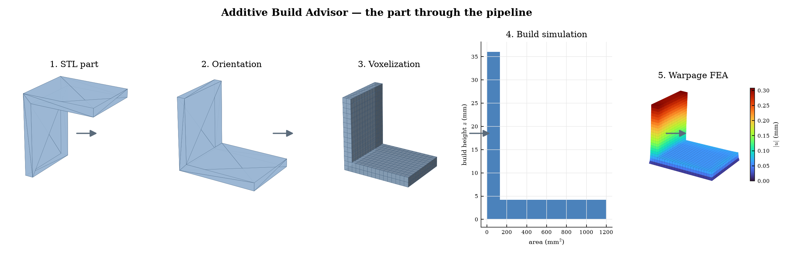
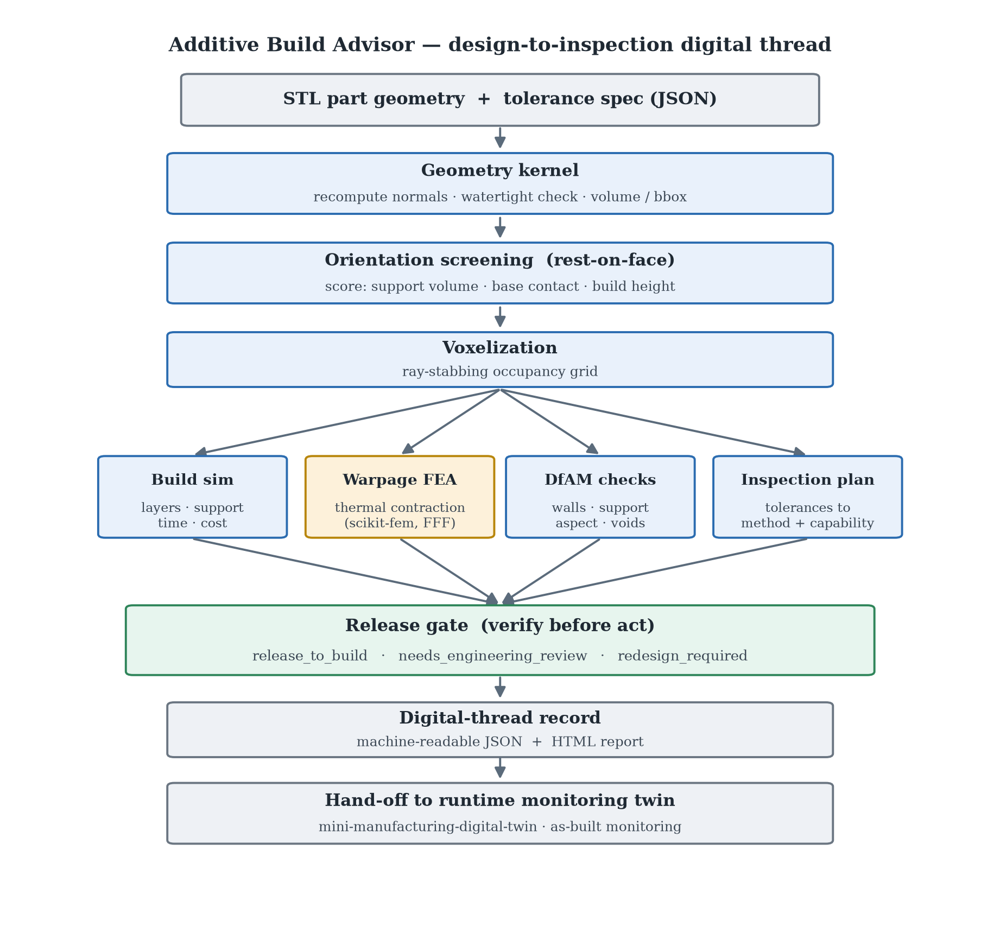
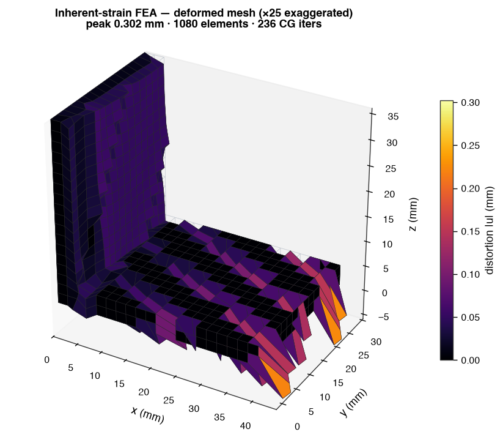
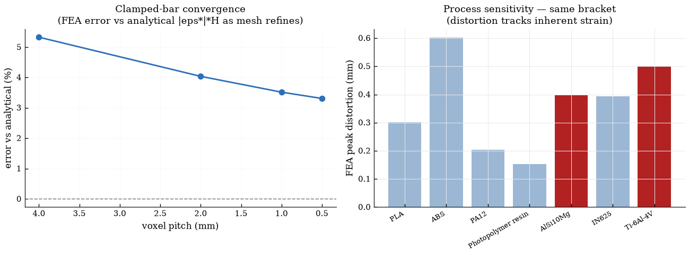
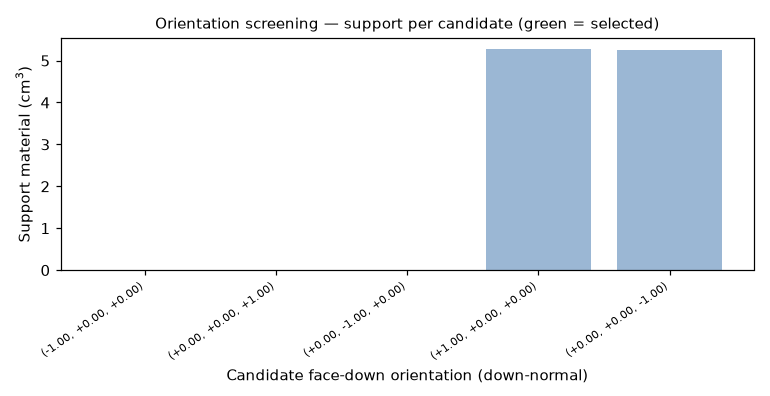
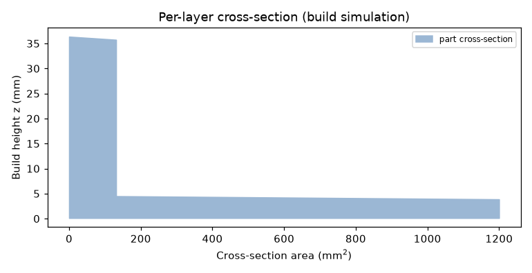
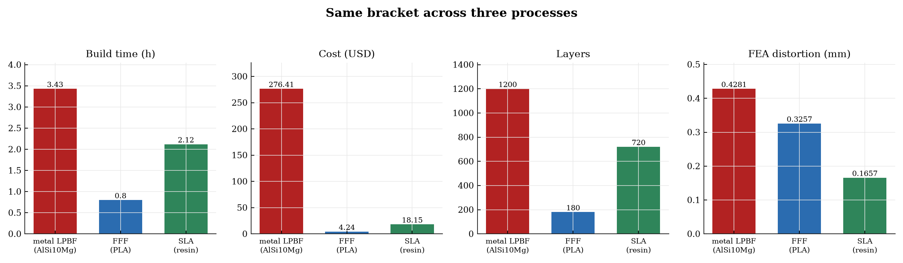

A design-to-inspection digital thread for additive manufacturing.
A personal project I built to learn the design-to-make additive workflow end to end — and to have a clean, extensible base I can keep developing.
It takes a part geometry (STL), decides how to build it, simulates the build, runs a
finite-element distortion analysis, checks whether the part can actually be made and
measured, and emits one auditable record with an explicit release gate:
release_to_build, needs_engineering_review, or redesign_required.


Parse the STL, recompute normals, verify watertightness; voxel volume cross-checked against the analytic mesh volume.
Rest-on-face candidates scored on real support volume, base contact, and build height.
Voxelize by ray-stabbing; estimate layers, support, build time, and cost.
Inherent-strain linear-elastic solve with scikit-fem (metal LPBF).
Thin walls, support, aspect ratio, trapped voids; tolerances vs as-built capability.
Release, review, or redesign — with reasons — then a machine-readable record.
Distortion is predicted with a genuine finite-element solve, assembled and solved with scikit-fem on a hexahedral mesh. Each element carries a thermal eigenstrain, the base is clamped to the plate, and the displacement field is the predicted distortion. This is the inherent-strain method used by tools like Netfabb and ANSYS Additive, and it targets metal laser powder-bed fusion (LPBF). The solver is validated against the analytical clamped-bar solution, and the predicted distortion is linear in the eigenstrain and independent of Young's modulus — as linear elasticity requires for an eigenstrain-only load.


Honest scope: the model reports the on-plate distortion (part bonded to the plate), not the post-release deflection NIST measures after cutting a part free; reproducing that needs a release step and a calibrated inherent strain.


The example runner exercises all three gate outcomes (numbers from a real run):
| Part | Process | Build time | Cost | FEA distortion | Gate |
|---|---|---|---|---|---|
| calibration_cube | FFF (PLA) | 0.71 h | $3.79 | 0.158 mm | release_to_build |
| gantry_bracket | FFF (PLA) | 0.80 h | $4.24 | 0.311 mm | needs_engineering_review |
| hollow_housing | SLA (resin) | 1.94 h | $17.16 | 0.102 mm | redesign_required |
| cantilever_benchmark | LPBF (IN625) | 1.10 h | $103.61 | 0.093 mm | needs_engineering_review |
The build simulation, cost/time, and DfAM run natively for every process; the distortion FEA is grounded in metal LPBF and shown for FFF/SLA as an indicative comparison. The same bracket through three processes:

The full write-up — formulation, equations, validation, and limitations — is in the PDF report.